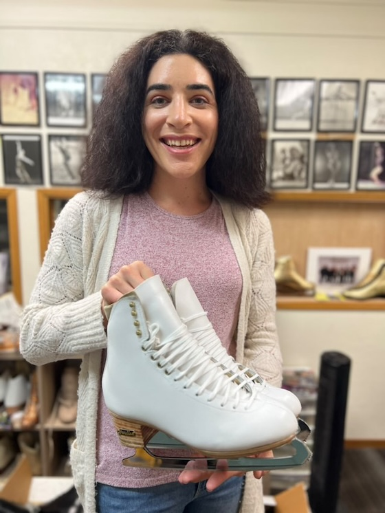

The Athlete
Adult Participation - Synchronized Skating
Growing up, my primary sport was competitive figure skating. I’m thrilled to share that I resumed skating after a 15-year hiatus.
I discovered a synchronized skating team from Oakland, CA called IceSymmetrics, which competed at the Masters level. I joined the team as an alternate during the 2023-24 season, starting in late November. In January 2024, the team performed and secured a spot at the 2024 US Synchronized Skating Championships in Las Vegas, NV. Tragically, one of our skaters was unable to participate at Nationals, and I was unexpectedly asked to fill her spot. It was an incredible experience to perform once again, and I was thrilled to see our team secure a 7th-place finish.
I skated on the IceSymmetrics for the full 2024-25 season where we placed 9th at the 2025 US Synchronized Skating Championships in Colorado Springs, CO.
In the 2025-26 season, IceSymmetrics competed at the Open Adult level, placing 3rd at the 2026 Pacific Coast Synchronized Skating Sectional. I'm now eagerly awaiting the 2026-27 season! I've found my continued participation in the sport of figure skating as an adult very fulfilling, even though it is just for a few hours once a week.
Competition Gallery
| Season | Event | Level | Location | Result | Photos |
|---|---|---|---|---|---|
| 2025–26 | Pacific Coast Sectional | Open Adult | Highlands Ranch, CO | 3rd of 6 | — |
| 2024–25 | US Championships | Masters | Colorado Springs, CO | 9th of 12 | — |
| 2023–24 | US Championships | Masters | Las Vegas, NV | 7th of 12 | View Photos |
Photos © KrPhotogs Photography LLC, used with permission. See license.
Adult Participation - Ice Hockey
While in school I coached figure skating at the San Diego Ice Arena (SDIA). After a lot of convincing the GM Gaston Larious, I became responsible for designing and supporting a website for the ice rink. This web developer role facilitated a relationship with hockey director Craig Sterling who immediately got to work getting me to try ice hockey. I got the gear and learned the basics. In 2015, I found a recreational co-ed hockey team in San Jose, CA captained by a coworker and skated on the team mostly once a week until 2024 when parenting priorities made participation more difficult. I hope to resume regular recreational ice hockey in the future!
Youth Competition - Singles, Pairs, Ice Dance
I started skating in December of 2002 and at the time I was twelve years old. The local skate park at the Ray & Joan Kroc Corps Community Center closed for their Christmas toy drive and my friend, Chance and I decided to try ice skating to fulfill our physical education requirement (since we were both in an independent study program).
Needless to say, I was hooked. Although my first public session was in hockey skates, I quickly migrated to figure skating. I signed up for my very first figure skating class in January of 2003 and was on the ice nearly 30 hours a week within the first year.
With so many hours of skating under my wings; I quickly started to succeed with the help of my first coach, Lexie Hernandez. In addition, I was able to start competing in various recreational competitions through the Ice Skating Institute.
Once I started learning the axel, a difficult skating jump, I started to build a team of coaches. Among these coaches is most notably Wanda Guntert. Wanda was one of my favorite instructors because of her dedication to the sport and her personal interest in seeing me succeed.
With Wanda and my Axel; we were able to find another local skater, Amy Sims who happened to be interested in skating pairs. Amy and I trained together under Wanda and her coach, Bob Pellaton. Amy and I entered U.S. Figure Skating Association's 2005 Competitive Season and eventually competed at the 2005 U.S. Jr. National Championships. We competed in Juvenile Pairs and were thrilled with our 18th place finish!
After competing at Jr. Nationals with Amy, the partnership was split and we went our separate ways. I went on to compete in singles skating for the following couple of years under the instruction of Mary Couense and Eric Millot while I waited for another partnership to form. During this intermediate period I was fortunate enough to place 1st at the Southwest Pacific Regional Championships in the open juvenile division.
The moment that took me out of my singles slump was after a test session at the San Diego Ice Arena. A local judge, Claude Sweet recommended I try ice dancing and set up a tryout for me. Although this initial tryout did not succeed, I was hooked on the sport of ice dancing.
With the help of Suzy Semineck (Schurman) and Darlene Gilbert, I was able to pass my pre-silver dance before my next tryout with Hayley SooHoo. Hayley, an elegant skater from Los Angeles (under the instruction of James Yorke) was very interested in the prospect of competing in ice dancing and our partnership was quickly formed in June of 2007.
When we started training we decided that it would take place in Burbank, CA at Pickwick Ice. This rink was home to Hayley's primary dance coach, James Yorke and our soon to be choreographer, Renee Roca. Although the majority of our training was with these two superb instructors (that I really didn't appreciate at the time), the SooHoo family went to great lengths to include my coach, Darlene in our training regiment. Every Tuesday we would drive to see Darlene at Glacier Gardens in Lakewood, CA to brush up with a fresh perspective.
Hayley and I went on to place 4th at the Pacific Coast Sectionals and 11th at the 2008 U.S. Figure Skating National Championships in St. Paul, MN in the Novice division. We were thrilled with our results and were sad to part ways after our competitive stint together.
After I competed with Hayley, I had several tryouts across the country and eventually found myself in Colorado Springs, CO under the instruction of Patti Gottwein. Although nothing materialized from my stay in Colorado, I was able to meet a lot of interesting people and have a taste of what being a real athlete is all about.
After Colorado Springs, I decided to come home and be with my family. Temporarily living away from home has to be the most educational, emotional, exhilarating, and frightening thing I have ever done. Looking back, it was the best thing I ever did and I can't thank everyone enough (especially the SooHoo family) for giving me this amazing opportunity.
I hope you have enjoyed this short summary on my adventure into competitive ice skating. For those of you interested; I likely reached (but never competed) at a junior level in ice dancing before finally resigning to pursue endeavors outside of the ice skating universe.
I can't thank certain members of the skating community enough due to their profound influence on me as a person (some not even mentioned above), you know who you are; thank you! Finally, I'd like to thank my parents for supporting me through my ice skating endeavor; without their support I would have never been able to embark on such an enriching journey.

Harlick has been such an important resource throughout my years figure skating. Above is a photo of me holding my newest figure skates!